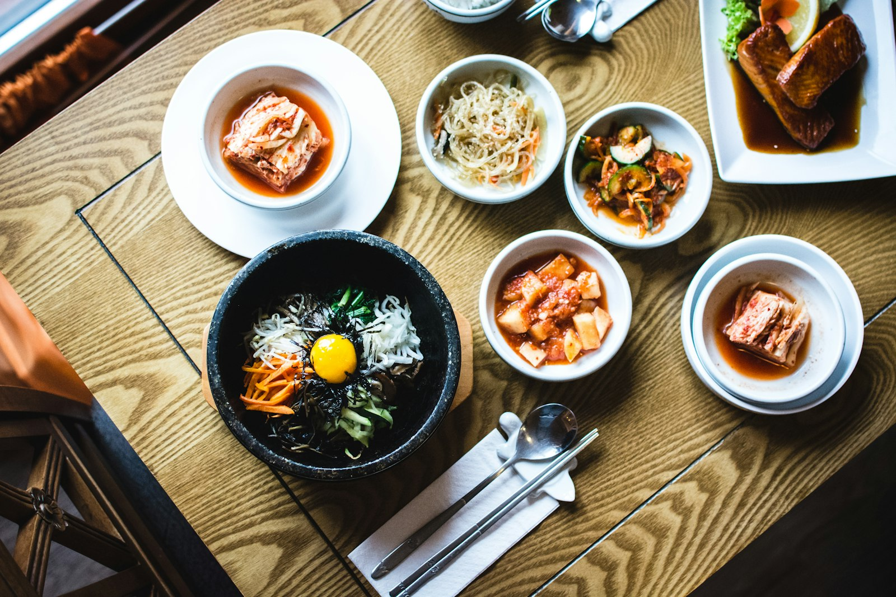
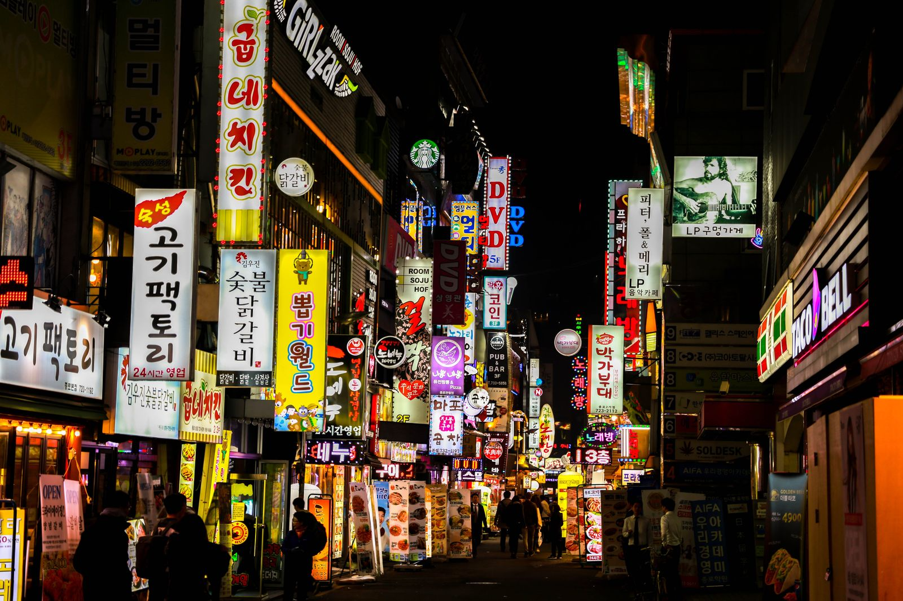
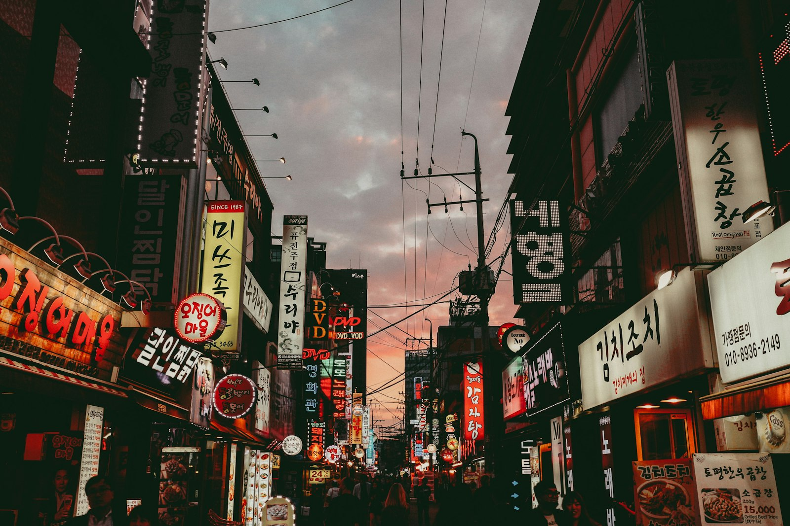

Bibimbap
Cơm trộn rau, thịt và trứng — cân bằng màu sắc, dinh dưỡng và hương vị.
01 · Lịch sử
Lịch sử Hàn Quốc trải dài từ các vương quốc cổ Gojoseon, thời Tam Quốc (Goguryeo, Baekje, Silla), đến các triều đại Goryeo và Joseon. Chữ Hangul do vua Sejong sáng tạo vào thế kỷ XV là di sản tư tưởng và ngôn ngữ đặc biệt của dân tộc Hàn.
Thế kỷ XX mang những biến động lớn: kết thúc thuộc địa, chiến tranh Triều Tiên, rồi sự trỗi dậy của Đại Hàn Dân Quốc hiện đại. Ngày nay Seoul là trung tâm kinh tế — văn hóa toàn cầu, nơi truyền thống và đổi mới cùng tồn tại.

02 · Ẩm thực
Ẩm thực Hàn Quốc nổi bật với vị lên men, cay vừa phải và bàn ăn nhiều món phụ (banchan). Kimchi, nước tương, tương ớt gochujang tạo nên “ngôn ngữ vị” đặc trưng của bán đảo.
Cơm trộn rau, thịt và trứng — cân bằng màu sắc, dinh dưỡng và hương vị.
Món lên men biểu tượng, có mặt gần như mọi bữa ăn Hàn Quốc.
Thịt nướng tại bàn, ăn kèm rau và sốt — trải nghiệm xã hội ấm áp.
Tteokbokki, hotteok, kimbap — nhịp sống nhanh của phố Hàn.

03 · Lễ hội
Seollal (Tết âm lịch) và Chuseok (Tết Trung thu) là hai kỳ lễ lớn nhất: đoàn tụ gia đình, mâm cỗ truyền thống, và nghi thức tưởng nhớ tổ tiên.
Bên cạnh đó còn có lễ hội hoa anh đào, lễ hội đèn lồng, và nhịp sống văn hóa đô thị — từ concert K-pop đến các khu phố đêm đầy màu sắc ở Seoul.

04 · Trang phục
Hanbok là trang phục truyền thống với đường nét mềm, màu sắc hài hòa. Ngày nay, người Hàn mặc hanbok vào ngày lễ, đám cưới, và khi tham quan cung điện — đồng thời phiên bản hiện đại xuất hiện trên sàn diễn và phố thị.
Thời trang Hàn đương đại (K-fashion) cùng làn sóng Hallyu đã đưa phong cách Seoul ra thế giới, nhưng hanbok vẫn là biểu tượng gốc rễ của bản sắc văn hóa.

05 · Di sản
Hàn Quốc có nhiều di sản UNESCO: cung Changdeokgung, làng dân tộc Hahoe và Yangdong, đền Jongmyo, và các không gian văn hóa sống như pansori hay kimjang (làm kimchi cộng đồng).
Song song với di sản cổ là hình ảnh Seoul hiện đại — từ Bukchon hanok đến các biểu tượng kiến trúc mới — kể câu chuyện một quốc gia vừa giữ gốc, vừa hướng tương lai.
Mỗi món ăn, lễ hội hay di sản là một lời chào. Cầu Nối Việt–Hàn mời bạn mang sự tò mò ấy vào hành trình giao lưu hai nước.